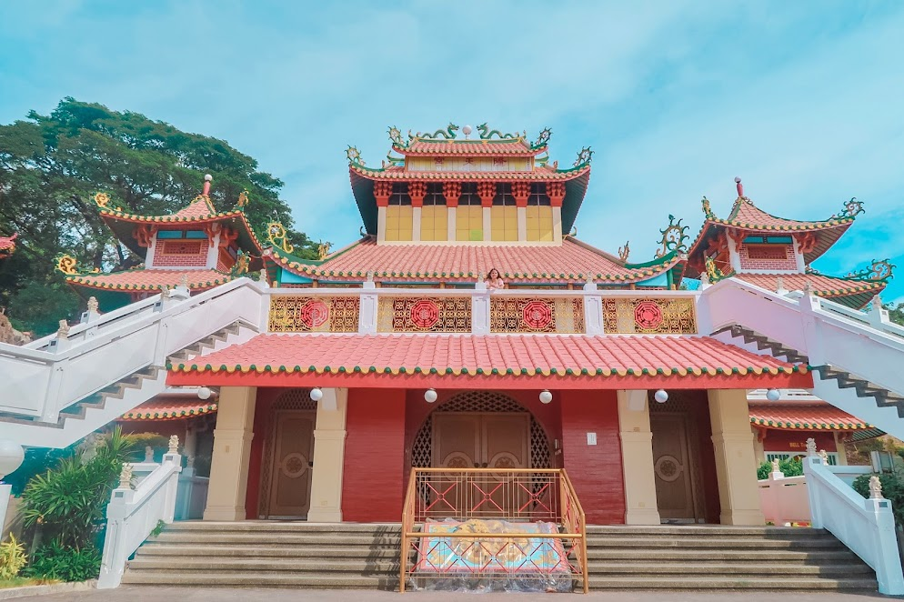
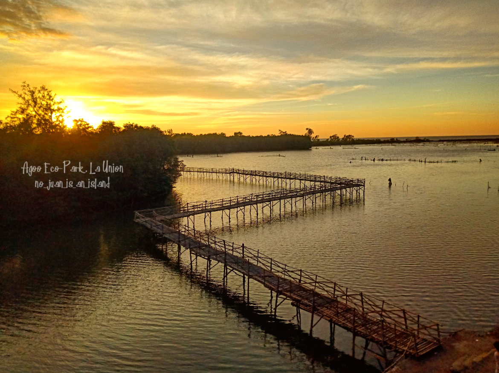
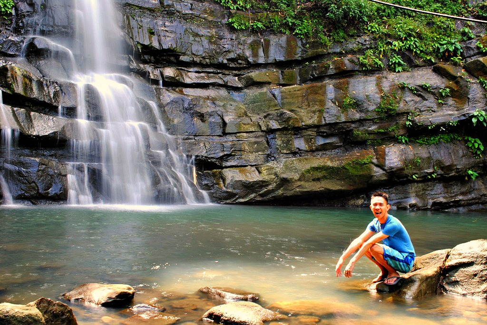
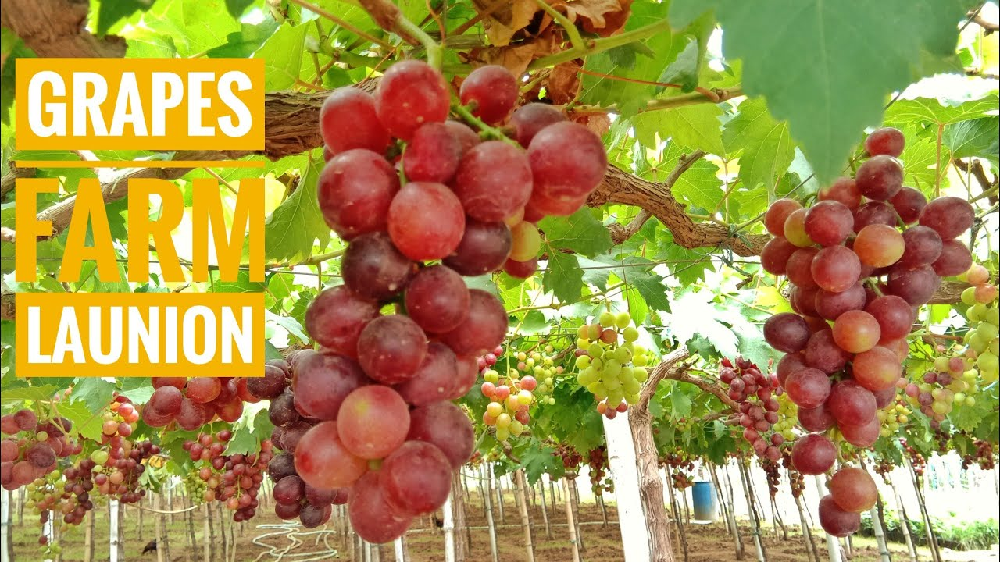
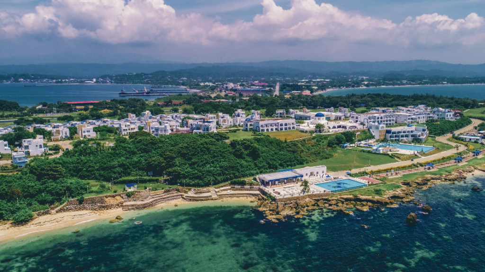
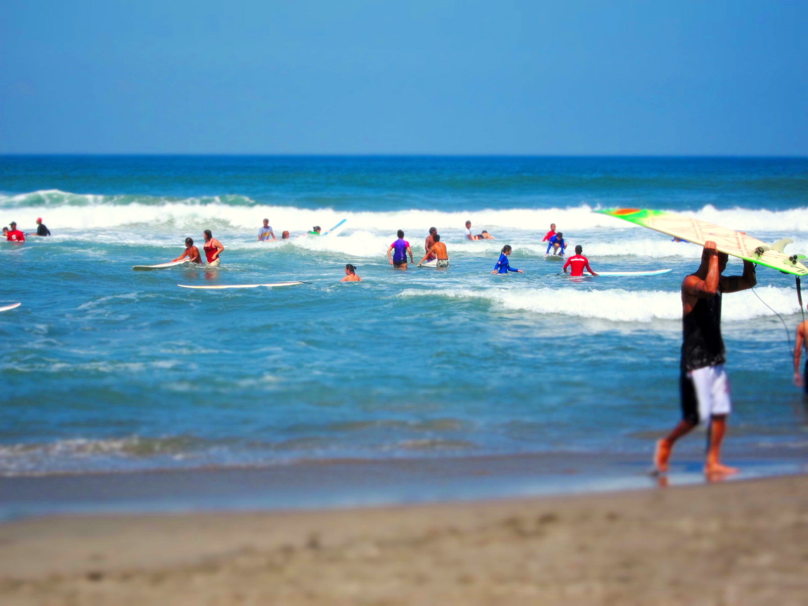
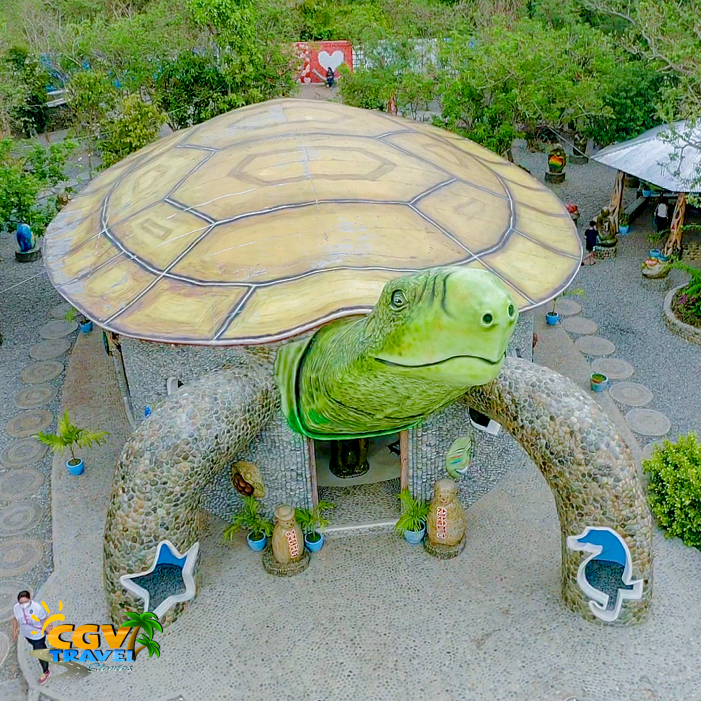

ELYU Spots
La Union is one of the most visited provinces in the Ilocos Region because of the surfing and chill vibe. But apart from surfing, there are tons of La Union tourist spots you can visit.

MACHO TEMPLE AT SAN FERNANDO CITY, LA UNION

ECO PARK AT AGOO, LA UNION

TUDDINGAN FALLS AT NAGUILIAN, LA UNION
![Beneath the tropical green forest of Pugo, La Union, sits the ever-famous Adventure Park, which is widely-known as PUGAD. Among the vast resorts and adventure parks in the province, it is one if not the best destination for tourists from around the Philippines. One thing that PUGAD has, and is the reason why it is the most visited so far, is the climate. Since Pugo is not far from the City of Baguio, the Summer Capital of the Philippines, the temperature of the place is quite cold even if the sun is terribly shining. It is far from the city so one could really feel mother nature’s breath just as upon wandering on the forest or on the green fields around. Among the different varrieties of trees and woods are pine trees which is no difference from Baguio City.](./image/pugad.jpg)
PUGO ADVENTURE AT PUGO, LA UNION

IMMUKI ISLAND AT BALAOAN, LA UNION

BALAY ANITO FALLS AT SANTOL, LA UNION

TANGADAN FALLS AT SAN GABRIEL, LA UNION

BANTAY WATCH TOWER AT LUNA, LA UNION

GRAPES FARM AT BAUANG, LA UNION

THUNDERBIRD RESORT POROPOINT AT SAN FERNANDO, LA UNION

URBIZTONDO BEACH AT SAN JUAN, LA UNION

BATO DE LUNA AT LUNA, LA UNION
×